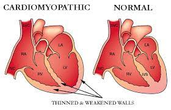

Hypertrophic Cardiomyopathy(HCM)

SYMPTOMS:
Symptoms associated with the presence of ventricular tachycardia or heart failure include:
- Chest pain or pressure that usually occurs with exercise or physical activity, but also may occur with rest or after meals.
-
Shortness of breath and fatigue, especially with exertion. These symptoms are more common in adults with hypertrophic cardiomyopathy and are most likely caused by a backup of pressure in the left atrium and lungs.
-
Syncope (fainting or passing out) may affect HCM patients. Syncope with HCM may be caused by irregular heart rhythms, abnormal responses of the blood vessels during exercise, or no cause may be found.
-
Palpitations (fluttering in the chest) due to abnormal heart rhythms (arrhythmias) such as atrial fibrillation or ventricular tachycardia. Atrial fibrillation occurs in about 25 percent of those with HCM, and increases the risk for blood clots and heart failure.
CAUSES
- HCM can be inherited, caused by an abnormality in a gene that codes the characteristics for the heart muscle. There are many genes that can cause HCM. When a gene defect is present, the type of HCM that develops varies greatly within the family. In addition, some people who have the HCM gene may never develop the disease.
-
Hypertrophy may be acquired as a result of high blood pressure or aging.
-
In other instances, the cause of hypertrophy and HCM is unknown.
DIAGNOSIS
The diagnosis of HCM is based on:
- Medical history: Your doctor will ask you questions about your symptoms and family history.
-
Physical exam: Your doctor will listen to your heart and lungs. Patients with hypertrophic obstructive cardiomyopathy (HOCM) may have a heart murmur.
-
Tests: An echocardiogram is the most common test used to diagnose HCM, as the characteristic thickening of the heart walls is usually visible on the echo. Other tests may include blood tests, electrocardiogram, chest X-ray, exercise stress echo test, cardiac catheterization and magnetic resonance imaging (MRI).